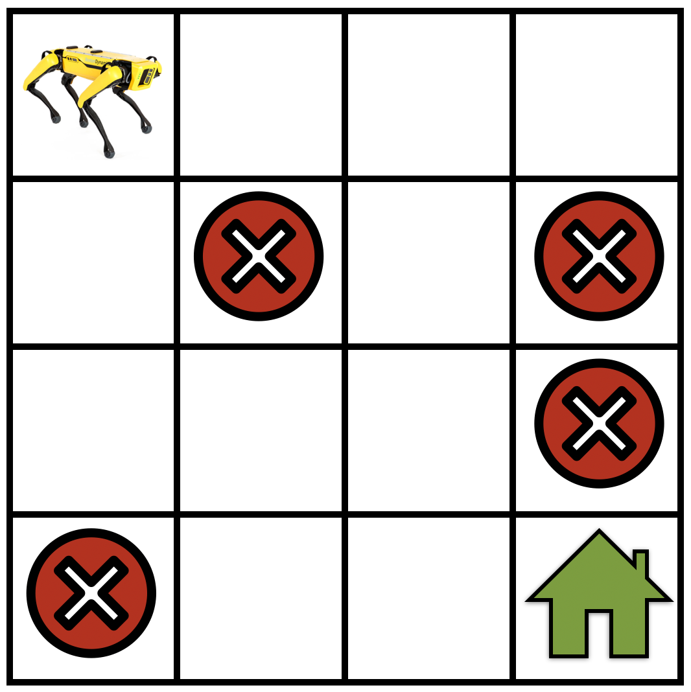

17.1. 马尔可夫决策过程（MDP）¶
本节将讨论如何用马尔可夫决策过程（Markov decision process，MDP）来形式化强化学习问题，并详细描述 MDP 的各个组成部分。
17.1.1. MDP 的定义¶
马尔可夫决策过程（MDP） (Bellman, 1957) 是一个描述系统状态如何随施加不同动作而演化的模型。若干不同的量共同构成一个 MDP。


图17.1.1 一个简单的网格世界导航任务：机器人不仅要找到通往目标位置（以绿色房子表示）的路，还要避开陷阱位置（以红色叉号表示）。¶
令 \(\mathcal{S}\) 为 MDP 中的状态集合。具体例子见 图17.1.1：一个在网格世界中导航的机器人。此时，\(\mathcal{S}\) 对应于机器人在任意给定时间步可能所处的位置集合。
令 \(\mathcal{A}\) 为机器人在每个状态可执行的动作集合，例如“前进”“右转”“左转”“停在原地”等。动作可以将机器人当前的状态改变为集合 \(\mathcal{S}\) 中的其他状态。
有时我们并不确切知道机器人如何移动，只能近似地了解。在强化学习中，我们这样对这种情况建模：如果机器人执行“前进”动作，它可能以一个小概率停在当前状态，又以另一个小概率“左转”，等等。在数学上，这相当于定义一个“转移函数” \(T: \mathcal{S} \times \mathcal{A} \times \mathcal{S} \to [0,1]\)，它给出 \(T(s, a, s') = P(s' \mid s, a)\)，也就是在机器人处于状态 \(s\) 并执行动作 \(a\) 的条件下到达状态 \(s'\) 的条件概率。转移函数是一个概率分布，因此对所有 \(s \in \mathcal{S}\) 和 \(a \in \mathcal{A}\) 都有 \(\sum_{s' \in \mathcal{S}} T(s, a, s') = 1\)，也就是说，机器人一旦执行某个动作，就必须转移到某个状态。
现在，我们利用“奖励” \(r: \mathcal{S} \times \mathcal{A} \to \mathbb{R}\) 的概念来建立一种判断哪些动作有用、哪些动作无用的观念。我们说，如果机器人在状态 \(s\) 执行动作 \(a\)，它就获得奖励 \(r(s,a)\)。如果奖励 \(r(s, a)\) 很大，这表明在状态 \(s\) 执行动作 \(a\) 对实现机器人的目标（即前往绿色房子）更有用。如果奖励 \(r(s, a)\) 很小，那么动作 \(a\) 对实现该目标的作用就较小。需要注意的是，奖励是由用户（即编写强化学习算法的人）带着目标来设计的。
17.1.2. 回报与折扣因子¶
上述不同组成部分共同构成一个马尔可夫决策过程（MDP）
现在考虑这样的情形：机器人从某个特定状态 \(s_0 \in \mathcal{S}\) 出发，不断执行动作，从而形成一条轨迹
在每个时间步 \(t\)，机器人处于状态 \(s_t\) 并执行动作 \(a_t\)，从而获得奖励 \(r_t = r(s_t, a_t)\)。一条轨迹的回报（return）是机器人沿该轨迹获得的总奖励
强化学习的目标是找到一条回报最大的轨迹。
设想机器人在网格世界中不断移动，却始终没有到达目标位置。此时轨迹中的状态和动作序列可以无限长，而任何这样的无限长轨迹的回报都将是无穷大。为了使强化学习的形式化描述即使对这类轨迹也保持有意义，我们引入折扣因子 \(\gamma < 1\) 的概念。我们将折扣回报写为
请注意，如果 \(\gamma\) 很小，机器人在遥远未来（例如 \(t = 1000\)）获得的奖励会被因子 \(\gamma^{1000}\) 大幅折扣。这会鼓励机器人选择能实现其目标的短轨迹，即网格世界示例中前往绿色房子的轨迹（见 图17.1.1）。若折扣因子很大，例如 \(\gamma = 0.99\)，则会鼓励机器人先探索，然后找到前往目标位置的最佳轨迹。
17.1.3. 马尔可夫假设的讨论¶
让我们考虑一个新的机器人：其状态 \(s_t\) 仍表示位置，但动作 \(a_t\) 是机器人施加在车轮上的加速度，而不是“前进”这类抽象指令。如果该机器人在状态 \(s_t\) 具有非零速度，那么下一个位置 \(s_{t+1}\) 是过去位置 \(s_t\)、加速度 \(a_t\) 以及机器人在时刻 \(t\) 的速度的函数，而该速度正比于 \(s_t - s_{t-1}\)。这表明我们应该有
在这个例子中，“某个函数”将是牛顿运动定律。这与我们仅依赖于 \(s_t\) 和 \(a_t\) 的转移函数有相当大的不同。
马尔可夫系统是指这样的系统：其下一个状态 \(s_{t+1}\) 只是当前状态 \(s_t\) 与在当前状态所执行动作 \(a_t\) 的函数。在马尔可夫系统中，下一个状态不依赖于过去执行过哪些动作，也不依赖于机器人过去处于哪些状态。例如，上面那个以加速度为动作的新机器人不是马尔可夫的，因为下一个位置 \(s_{t+1}\) 通过速度依赖于前一状态 \(s_{t-1}\)。系统的马尔可夫性质看似是一个限制性很强的假设，但事实并非如此。马尔可夫决策过程仍然能够对很大一类真实系统建模。例如，对于我们的新机器人，如果把状态 \(s_t\) 取为元组 \((\textrm{location}, \textrm{velocity})\)，那么该系统就是马尔可夫的，因为其下一个状态 \((\textrm{location}_{t+1}, \textrm{velocity}_{t+1})\) 只依赖于当前状态 \((\textrm{location}_t, \textrm{velocity}_t)\) 和在当前状态执行的动作 \(a_t\)。
17.1.4. 小结¶
强化学习问题通常用马尔可夫决策过程来建模。马尔可夫决策过程（MDP）由四个实体组成的元组 \((\mathcal{S}, \mathcal{A}, T, r)\) 定义，其中 \(\mathcal{S}\) 是状态空间，\(\mathcal{A}\) 是动作空间，\(T\) 是编码 MDP 转移概率的转移函数，\(r\) 是在特定状态执行动作所获得的即时奖励。
17.1.5. 练习¶
假设我们要设计一个 MDP 来建模 MountainCar 问题。
状态集合会是什么？
动作集合会是什么？
可能的奖励函数有哪些？
你会如何为 Pong 游戏这类 Atari 游戏设计 MDP？